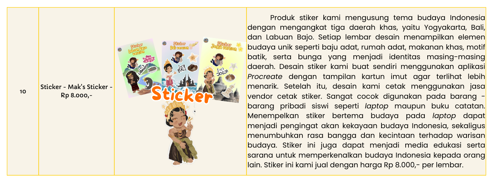
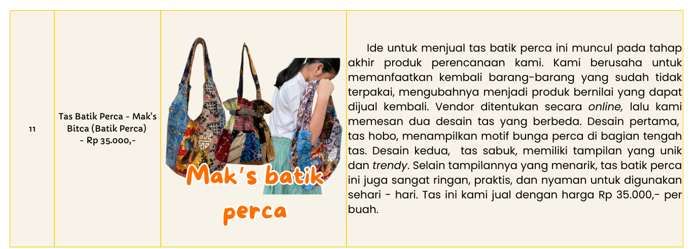
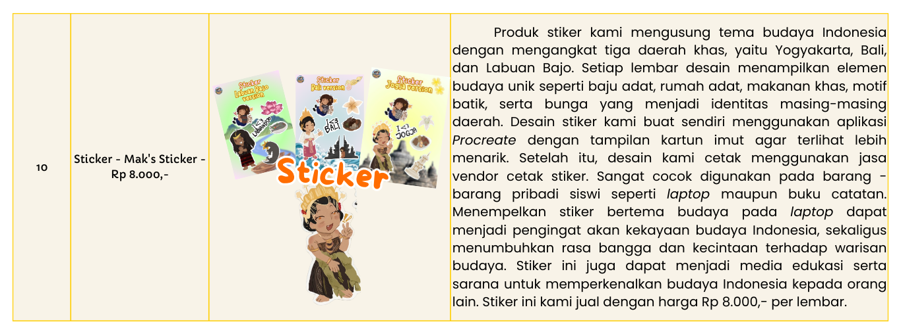
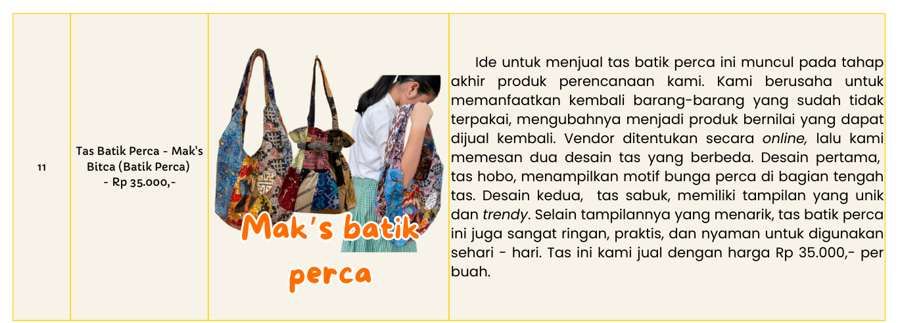

PERENCANAAN PRODUKSI
Kegiatan bazar dan pentas seni SMP Santa Ursula Jakarta yang berlangsung:
- Tanggal:14 dan 16 Januari 2025
- Waktu:10.00 s.d. 14.30 WIB
- Tempat:SMP Santa Ursula Jakarta
Mengangkat tema “Puspa Nusa” tema Puspa Nusa. Puspa Nusa" dalam KBBI berarti "bunga-bunga dan pulau-pulau," mengacu pada kekayaan flora dan pulau-pulau di Indonesia, yang sering digunakan untuk menggambarkan keindahan alam dan keragaman hayati Indonesia. Oleh karena itu, kelompok kami merasa tepat untuk memilih Provinsi Daerah Istimewa Yogyakarta untuk dijadikan profil tema situs/website, nuansa dekorasi booth saat bazar, hingga desain dari beberapa jenis produk yang kami jual. Kami memulai persiapan secara bertahap, mulai dari penentuan tema dan konsep, hingga pemilihan jenis produk, dan penetapan harga jual.
Kelompok kami membutuhkan waktu sekitar tiga minggu sejak pemilihan anggota kelompok dilaksanakan secara acak, tepatnya bulan Agustus 2024, untuk menentukan jenis dan jumlah produk yang akan dijual saat bazar. Beberapa kriteria penentuan dari produk yang akan dijual yaitu:
- Mengandung unsur budaya Indonesia
- Desain menarik atau eye - catching
- Unik dan fungsional
- Sedang tren
- Sesuai dengan selera atau minat target pembeli
Akhirnya, kami memutuskan untuk menjual 11 jenis
produk, yaitu:
 



HOW TO MAKE FERMENTED HONEY LIP BALM
Note: This recipe makes 3 lip balms.
- Tools and Materials
- Tools for fermentation:
- 1 jar for storing honey
- Tools for making the lip balm:
- 1 chocolate melter
- Measuring spoons
- Bowls
- 1 pack of tissue paper
- Materials for fermentation:
- 1/4 honey pineapples (cut into pieces)
- Organic honey - 200 ml
- Materials for making the lip balm:
- Beeswax - 6 grams
- Soy wax - 2.5 grams
- Cocoa butter - 2.5 grams
- Shea butter - 2.5 grams
- Coloring (mica powder) - ⅛ teaspoon
- Fermented honey - 2.5 ml
- Almond oil - 5 ml
- 3 honey-shaped lip balm container + small honey dipper
- Tools for fermentation:
- Step-by-Step
- Part One: Fermenting the Honey
- Before preparing the lip balm, the honey must be fermented with pineapple.
- The pineapple is placed in a clean, empty jar.
- Then, organic honey is poured into the jar.
- The container is sealed tightly and left in a dark room at room temperature for five days.
- Each day, the gas pressure is released by slightly loosening the lid.
- After five days, the honey is strained, and the pineapple is removed. The fermented pineapple can be consumed directly or processed into candied fruit, while the fermented honey is set aside for lip balm preparation.
- Part Two: Making the Lip Balm
- Once the honey has fermented, gather all the necessary tools and ingredients.
- Then, 6 grams of beeswax is added to the chocolate melter.
- Afterward, 5 ml of almond oil is measured and poured into the mixture.
- Next, 2.5 grams of cocoa butter, 2.5 grams of shea butter, 2.5 grams of soy wax, and 2.5 ml of fermented honey are added as well.
- The chocolate melter is adjusted to level 2, and the mixture is heated until completely melted.
- Next, ⅛ teaspoon of mica powder is added.
- Stir all ingredients until evenly mixed.
- Finally, the mixture is poured into storage containers and refrigerated for 15 minutes.
- Once set, the honey lip balm is taken out of the fridge and is ready for use!
- Part One: Fermenting the Honey
HOW TO MAKE CHURROS
Note: This recipe makes 20 churros.
- Tools and Materials
- Tools:
- A mixing bowl
- A spatula
- A measuring cup
- Spoons
- Scissors
- A pot
- A saucepan
- Strainer or tongs
- Cooking paper towels
- Digital kitchen scale
- A heatproof bowl
- Piping bag with a star-shaped nozzle
- Materials
- For the Churros:
- 125 grams of flour
- 25 grams of margarine
- 225–250 ml of water
- 1 egg (room temperature)
- 1 tablespoon of sugar (adjust to taste)
- A pinch of salt
- Vegetable oil (for frying)
- For Coating:
- 100 grams of sugar
- 1 teaspoon of cinnamon powder
- For Chocolate Sauce (Optional):
- 300 ml milk
- Nutella (as needed)
- For the Churros:
- Tools:
- Step-by-Step
- Firstly, ensure that all ingredients are measured accurately using a kitchen scale and measuring spoons. Allow the egg to reach room temperature before use. The piping bag should also be prepared with a star-shaped nozzle to shape the churros.
- Next, water, margarine, sugar, and salt are combined together in a pot and heat over medium heat until the mixture begins to bubble.
- Then, flour is added all at once, and stir rapidly until a smooth, non-sticky dough forms.
- After that, the pot is removed from the heat, and the dough is allowed to cool for approximately 5–10 minutes.
- Once slightly cooled, the dough is placed into a mixing bowl.
- Next, the egg is added to the dough and thoroughly mixed until fully incorporated, resulting in a smooth and slightly sticky consistency.
- Meanwhile, vegetable oil is heated in a pot over medium heat until it reaches approximately 170°C (340°F).
- The dough is then placed into a piping bag fitted with a star-shaped nozzle.
- Once the oil is hot, strips of dough measuring 10–15 cm (4–6 inches) are piped directly into the oil, cutting them with a spoon or scissors.
- The churros are fried in batches for 3–4 minutes, turning occasionally, until they become golden brown and crispy.
- After frying, the churros are removed from the oil using a strainer or tongs and drained on paper towels.
- While still warm, the churros are rolled in a mixture of sugar and cinnamon powder until evenly coated.
- Meanwhile, a small amount of water is added to a saucepan and brought to a simmer over low heat. A heatproof bowl is placed on top, ensuring it does not come into contact with the water.
- Then, Nutella and milk are added to the bowl and stirred continuously until the mixture thickens and becomes smooth.
- Once ready, the sauce is removed from the heat.
- Finally, the churros are arranged in the packaging and served with a packet of Nutella sauce for dipping. They are now ready to be enjoyed!